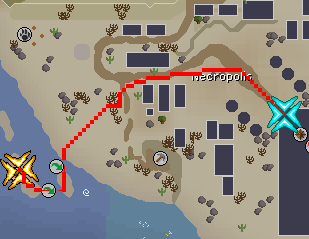
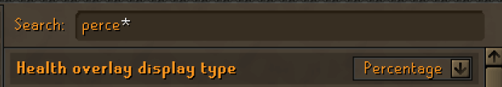
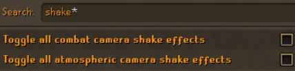
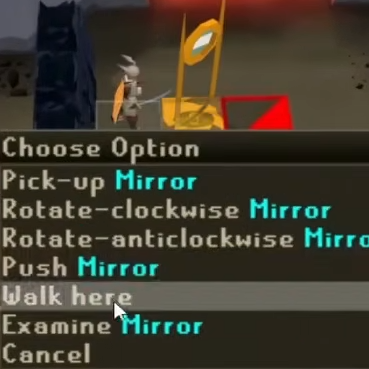
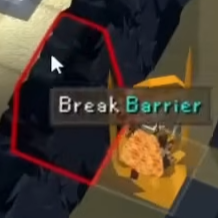
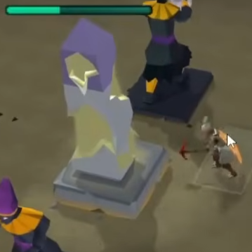
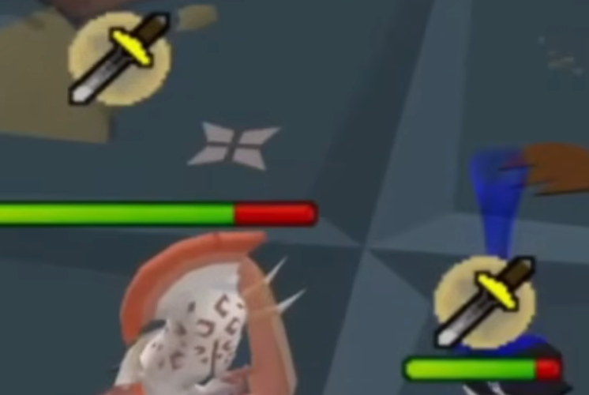
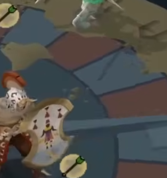
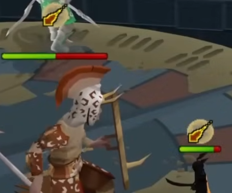
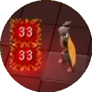

⚔ Tombs of Amascut ⚔
1. Shopping List
Wear all of it. Don't bother with switches — your serpentine helm + powered staff covers magic so you don't need a spellbook or rune pouch.
Equipment (locked in)
| Slot | Item | Why |
|---|---|---|
| Helm |  Serpentine helm Serpentine helm | All-styles, venom immune (only helm you need) |
| Body |  Eclipse Moon chestplate Eclipse Moon chestplate | Melee body, fine for full raid |
| Legs |  Eclipse Moon tassets Eclipse Moon tassets | Matches set bonus |
| Boots |  Dragon boots Dragon boots | Strength + cheap |
| Amulet |  Amulet of fury Amulet of fury | All-styles, great defence |
| Cape (equipped) |  Ava's assembler Ava's assembler | Ranged bonus + ammo recovery for blowpipe/crossbow |
| Gloves |  Barrows gloves Barrows gloves | All-styles BiS for the price |
| Ring |  Lightbearer Lightbearer | Doubles spec regen — busted for the BGS/DDS/Eye-of-Ayak rotations |
Inventory — weapons + cape swap
 Osmumten's Fang — main melee (slash style)
Osmumten's Fang — main melee (slash style) Eye of Ayak — magic (powered staff, no spellbook needed; charge with 2,500 Demon tears at the altar before going)
Eye of Ayak — magic (powered staff, no spellbook needed; charge with 2,500 Demon tears at the altar before going) Toxic blowpipe — ranged DPS
Toxic blowpipe — ranged DPS Dragon crossbow + ruby (e) bolts — warden core opening spec
Dragon crossbow + ruby (e) bolts — warden core opening spec Dragon dagger — backup spec
Dragon dagger — backup spec Keris partisan — Kephri only
Keris partisan — Kephri only Mage Arena cape — swap in when casting with Eye of Ayak for the magic damage bonus
Mage Arena cape — swap in when casting with Eye of Ayak for the magic damage bonus
Inventory supplies
 1 × Super combat potion
1 × Super combat potion 1 × Ranging potion
1 × Ranging potion 1 × Sanfew serum
1 × Sanfew serum ~8 × Saradomin brews
~8 × Saradomin brews ~6 × Super restores
~6 × Super restores
Supply Ghost loot — what to grab (simple)
| Item | What it does (plain English) | Grab? |
|---|---|---|
 Honey locust Honey locust |
Stackable mini-heal: +20 HP and some prayer per dose. Auto-given when you die. | ✅ Free, take all |
 Ambrosia Ambrosia |
PANIC HEAL. Full HP + prayer + boosts both. Cures poison. | ⭐ Top priority — 1 each |
 Blessed crystal scarab Blessed crystal scarab |
Slow prayer regen: 72 prayer over 24 sec. Set and forget. | 👍 If extra |
 Liquid adrenaline Liquid adrenaline |
Halves spec cost for 150 sec. Drink before warden core. | ⭐ Grab one — save for warden core |
 Nectar Nectar |
Heals HP but DRAINS your combat stats. Trap potion. | ❌ Skip |
 Silk dressing Silk dressing |
Slow heal: 100 HP over 60 sec. Worse than brews. | 👌 Only if low on heals |
 Smelling salts Smelling salts |
Super combat + super range + super mage in one. Lasts 8 min. | ⭐ Top priority — 1 each |
 Tears of Elidinis Tears of Elidinis |
Restores stats + prayer, 3×3 area (heals your friend too). | 👍 Useful in duo |
Priority order: Ambrosia → Smelling salts → Liquid adrenaline → Tears of Elidinis → fill with Honey locusts/scarabs.
2. Getting There
Fairy ring code: AKP → drops you near Sophanem. Follow the path to the Necropolis pyramid (the X on the map).

3. Before Starting the Raid
🪓 Drop your pickaxe in Akkha's room
Before doing anything else, bring your best pickaxe (dragon / crystal / 3a) into the raid lobby and head into Akkha's light maze room. Drop it on the ground inside that room.
- The pickaxe persists across raids — drop once, use forever.
- Next raid: walk in, pick it up, mine the seal in the puzzle, drop it back when done.
- Without one, the puzzle gives you a bronze pickaxe — brutally slow and wastes minutes per raid.
- 85+ Mining with a dragon pickaxe = one-cycle the seal. D pick spec yourself to 85 if needed.
4. Room Order
Het and Scabaras are warmups. Stop at the Supply Ghost between halves.
5. Invocation Cheat Sheet (Your 150)
General
- Softcore Run — 3 deaths allowed. Safety net.
- Walk for It — 40 min timer. Plenty.
- On a Diet — no food. Brews/restores only.
Kephri
- Lively Larvae — 2× ranged scarabs. Pray range, ignore.
- Blowing Mud — dung is stronger. Just don't stand in it.
- Aerial Assault — fireball becomes 3×3. Move 2 tiles.
Zebak
- Not Just a Head — blood barrage. Pray mage, run from blood spawns.
- Blood Thinners — 3 spawns instead of 1.
Akkha
None — Akkha invos are brutal. Leave off.
Ba-Ba
- Feeling Special? — boss specs more often. React faster.
- Gotta Have Faith — sarcophagi hit harder if opened. Kill baboons fast.
- Jungle Japes — bananas under feet damage you. Don't slip.
- Shaking Things Up — bigger shockwave. Move further.
Wardens
- Ancient Haste — P1 obelisk charges faster.
- Overclocked / Overclocked 2 — wardens attack faster in P3.
6. Plugins (set these up first)
Install these from RuneLite → Configuration → Plugin Hub. They turn a panic-attack-inducing raid into a paint-by-numbers exercise.
Instead of configuring every plugin by hand, download my pre-built profile and import it. You'll instantly have the same color highlights, key remaps, settings, and plugin states as the guide assumes.
⬇ Download "Easy TOA.properties"
How to import:- Save the downloaded file somewhere you can find it (e.g. Downloads).
- Open RuneLite → click your character icon in the top-right of the side panel → Profiles.
- Click the Import button (folder icon at the top of the profiles list).
- Pick the
Easy TOA.propertiesfile you downloaded. - Click the new Easy TOA profile to activate it.
- If any Plugin Hub plugins are missing, RuneLite will prompt you to install them — accept all.
Tip: profiles are isolated — your normal RuneLite setup is untouched. Switch back to your default profile any time via the same menu.
Must-have
- Tombs of Amascut — overlays for puzzles (Akkha beam path, Kephri memory pattern, Baba pillars/vents/DD tile), boss prayer indicators, cracked boulder highlighting, baboon type labels. The single most important plugin.
- Inventory Tags (built-in) — color your weapons one way, your gear another. Fang/Eye of Ayak/blowpipe in Group 1 (Fill = solid color), armour in Group 2 (Outline = border). Instant style recognition.
- Dynamic Inventory Tags (Plugin Hub) — auto-marks items missing from your switch based on the weapon you have equipped.
- No items highlighted = you have the right equipment on. Silence is good. Keep playing.
- Items highlighted = those are missing from your current switch. Equip them before attacking.
- It re-checks every time you change weapons, so the highlight updates automatically when you swap to Fang / blowpipe / Eye of Ayak.
- Set this up at home with your duo loadout BEFORE you go. Configure one switch per weapon: blowpipe needs ranged top/bottoms/cape/ammo; Fang needs melee body/legs/dboots/fury; Eye of Ayak needs mage cape/bloodbark.
Heads up: Dynamic Inventory Tags only ADDS the missing-item tags — it doesn't render them. You also need the base Inventory Tags plugin enabled, otherwise nothing shows.
Nice to have
- Better NPC Highlight — color NPCs by what you attack them with (see priority list below).
- Inventory Setups — save your whole ToA loadout, one-click load from bank.
- Quick Prayers + bind a hotkey — auto-swap prayer for warden projectile flicks.
- Boss Timers — countdown for Akkha specials, Zebak roar, etc.
NPC Highlight list — Better NPC Highlight setup
Paste each block into a group in Better NPC Highlight with the matching color. Outline color = what to attack with.
🔴 Group 1 — MELEE (Fang)
Ba-Ba, Baboon Thrower, Soldier Scarab, Core, Energy Siphon, Ba-Ba's Shadow
Color: #FF0000 · Alpha 75
🟢 Group 2 — RANGE (Blowpipe)
Kephri, Zebak, Tumeken's Warden, Baboon Mage, Baboon Shaman, Cursed Baboon, Volatile Baboon, Spitting Scarab, Arcane Scarab, Healer Scarab, Agile Scarab, Scarab Swarm, Tumeken's Warden Phantom, Zebak's Shadow, Kephri's Shadow
Color: #00FF00 · Alpha 75
🔵 Group 3 — MAGIC (Eye of Ayak)
Baboon Brawler, Elidinis' Warden, Elidinis' Warden Phantom
Color: #00FFFF · Alpha 75
🟡 Group 4 — PRIORITY (kill first / don't die)
Arcane Scarab, Volatile Baboon, Cursed Baboon, Baboon Shaman
Color: #FFFF00 · Alpha 100 · layers on TOP of their base group. Arcane = kill FIRST. Volatile = NEVER melee.
Akkha not highlighted — he switches styles, so a single color is misleading. Just mirror his current prayer.
Key Remap (Plugin Hub) — tab hotkeys
Speed up gear/spec swaps. Bind these in Key Remap:
| Key | Tab | Use during raid |
|---|---|---|
Q | Prayer | Flick protection prayers + Piety/Rigour/Augury |
W | Inventory | Brew, restore, spec weapon swaps |
E | Magic | Spellbook (not needed if powered-staff only, but bind anyway) |
R | Combat Options | Spec attack toggle |
T | Equipment | Check what's equipped during chaotic moments |
F | Stats | Verify HP/Prayer/Spec at a glance |
Prayer reorder
Reorder your prayers in the prayer book so the ones you flick most are adjacent. Standard ToA-friendly order:
- Protect from Magic / Missiles / Melee grouped together at the top — for fast flicks during Zebak/Akkha/Wardens.
- Piety / Rigour / Augury grouped — single-click to swap offensive prayer when changing styles.
- Move never-used prayers (Thick Skin, Burst of Strength, Mystic Will etc.) to the bottom so you don't misclick.
OSRS in-game settings
Search the settings panel (gear icon → All settings → search bar) for these and flip them.
💚 Health overlay → Percentage

Search perce*. Switches HP bars from absolute numbers to percentages — way easier to read boss thresholds (66%, 33%, 5% enrage) at a glance.
🎥 Disable camera shake

Search shake*. Toggle OFF both:
· Combat camera shake (Ba-Ba slams, Zebak roar, warden enrage)
· Atmospheric camera shake
The shake makes flicking prayers WAY harder during the chaos. Off = win.
7. Universal Color & Prayer Readout
Same logic the entire raid. When unsure → flick mage.
| What you see | Style | Pray |
|---|---|---|
| Green / arrow / spike | Ranged | Protect Missiles |
| Blue / purple orb / wisp | Magic | Protect Magic |
| Red skull / scimitar / slash | Melee | Protect Melee |
| White / Black orb | Special — dodge | — move feet — |
| Lightning | Special — dodge | — move feet — |
🟢 8. Path of Het (Akkha)

Puzzle — Light Beam
Bounce mirrors so the beam hits the shielded statue. Mine the seal with your pickaxe. Don't stand in the beam or the floating black orbs. (Plugin shows the path.)

- Pick-up Mirror → carry it, then click a tile to drop it there.
- Push Mirror → nudges it 1 tile in the direction you're facing. Faster for small adjustments.
- Rotate-clockwise / -anticlockwise → spins it 90° to redirect the beam.
Tip: use the plugin overlay to see where the beam ends up — saves you guessing rotations.

- Right-click → Break Barrier with your pickaxe to clear them.
- Highlighted with a red outline (as in the image).
- You'll usually need to break 1–2 to open the path for your beam.
- Same pickaxe rules apply — dragon/crystal is much faster than bronze.

- The seal/obelisk drops (glowing yellow as in the image).
- Click it with your pickaxe equipped or in inventory to mine it.
- 85+ Mining + Dragon pick = one-cycle. D pick spec yourself if you're under 85.
- The green bar at the top is the puzzle timer — finish before it drains or you wipe.
- After mining the seal, walk to the storage alcove outside the boss arena (shown in image) and drop your pickaxe on the floor.
- It stays there across raids — pick it up next time you load in.
- Don't bring the pickaxe into the Akkha fight itself — it's just inventory clutter you can't use.
How to Damage
You only need 2 styles post-rework. Use Fang + Blowpipe. Mirror his prayer, attack with the other style.
| Akkha prays | You pray | You attack with | Example |
|---|---|---|---|
| Melee | Melee | Fang or Blowpipe (not melee) |  |
| Range | Range | Fang |  |
| Magic | Magic | Fang |  |
What to Avoid
6 normal attacks per cycle, then 1 special. He cycles Melee → Range → Magic. Mirror his prayer.
🌀 Memory Blast — video example
🟢 9. Path of Scabaras (Kephri)

Puzzle — Bug Room
Plugin shows everything. Memory grid → match order. Obelisks → trial & error. Pressure plates → light all. Maths → step on numbers summing to target. Final = matching pairs (split boards, call out symbols).
How to Damage
Equip Keris partisan, pray Range.
Duo Group Strategy
- Player A: stays on Kephri 100% — DPS the body.
- Player B: handles intermission scarabs while A finishes shield.
- During intermissions BOTH attack the called scarab.
- Stack on the SAME corner for dung. Agree "SW corner" before pulling. Dung doubles instead of blocking arena.
What to Avoid
Pray Range the whole shield phase. Kephri has 40% weakness to fire spells if you ever bring magic.
10. Supply Ghost — Helpful Spirit
Dump junk in the urn. Grab in priority:
- Ambrosia (panic heal — one each)
- Smelling salts (super-everything potion)
- Liquid adrenaline (half spec cost — save for warden core)
Top up brews & restores if low.
🟢 11. Path of Crondis (Zebak)

Puzzle
Grab jug, wait for spike pattern, run through in one click, water plant. Kill crocs with Eye of Ayak. 2 trips.
How to Damage
Blowpipe + ranged gear. Stay out of melee range — he hits hard up close.
Prayer Flicks
| What you see | Pray |
|---|---|
| Red orb flying at you | Magic |
| Grey rock flying at you | Range |
Hold prayer until it splats. Don't flick early.
What to Avoid
Specials trigger at 85% / 70% / 55% / 40% HP. Stay out of melee range — melee hits cause bleeding (more damage if you move).
🟢 12. Path of Apmeken (Ba-Ba)

Puzzle
Grab hammer + potions from crates. Plugin shows what's broken.
- Pillars/vents lit red → repair with hammer / douse with potion.
- Corruption (everyone red) → STACK on the DD tile (center).
- Baboons (use your color highlights):
- Brawler / Mage / Thrower → standard combat triangle
- Volatile — RANGE ONLY. Don't melee, it explodes.
- Cursed / Shaman — range only.
How to Damage
Fang + melee + pray melee for the entire fight (except boulders).
What to Avoid
Pray Melee the whole fight (except boulders).
13. Supply Ghost — Round 2
Same priorities: Ambrosia → Smelling salts → Liquid adrenaline. Top up brews/restores.
🟢 14. Wardens (Elidinis' / Tumeken's)

Three phases. Stay calm. Don't worry about max DPS — worry about staying alive.
Phase 1 — Obelisk Charging
The obelisk powers up one warden. The trough you stand on determines who you'll fight in P2.
- EAST trough = block Elidinis → fight Tumeken in P2 (he chases you, but lower base def — standard learner pick).
- WEST trough = block Tumeken → fight Elidinis in P2 (less aggressive, more stationary).
- BOTH players pick the SAME trough. If you split, both wardens get partially charged and P3 becomes a nightmare.
- Stand on the trough itself — the obelisk's energy passes through your tile to drain it.
- Attack the obelisk from there. Don't wander.
Phase 2 — Warden Body + Core
You alternate styles each down. Plugin highlights tell you which.
| Warden prays | You pray + attack with |
|---|---|
| Magic | Pray Magic, blowpipe (range) |
| Range | Pray Range, Eye of Ayak (magic) |
If you blocked Elidinis: you face Tumeken's Warden. It uses Protect Melee + Protect Magic — attack with Range (blowpipe). It will actively chase you to melee, so kite.
If you blocked Tumeken: you face Elidinis' Warden. It uses Protect Melee + Protect Missiles — attack with Magic (Eye of Ayak).
- Pick 2 safe tiles BEFORE the fight starts — mark them mentally (east and west of arena center, away from edges). Bounce between them to dodge red tiles. The plugin can highlight safe ground.
- Tumeken chases you — pull him toward your safe tiles, then sidestep. Don't get sandwiched on the edge.
- Elidinis is stationary — pick a tile slightly out of melee range, attack from there, only move for tiles/skull.
- Duo: stay roughly on the same line (both N or both S of warden) — makes orb stack/spread clean and lets you both reach the core fast when it pops.
- When core ejects: RUN to it (it spawns near the warden body). You only get a short window. Melee is the only style that max-hits.
- Lightning skull: step OUT of the shadow when you see it, sprint 7+ tiles, or hug right next to the center (within 2 N/S/E/W).
What to Avoid

- Drink Liquid Adrenaline.
- Equip Fang + Piety.
- DDS spec → DDS spec on the exposed core (back-to-back 33/33 hits like in the image).
- Fang the core till it goes invuln again.
- Repeat 2–3 times until P3.
Why DDS: two fast specs both crit for huge damage in the short core window — fastest melee spec burst in the game.
Bonus: Eye of Ayak's Soul Rend spec drains magic def. Pop it on the warden body before mage attacking.
Phase 3 — Final Confrontation
The OTHER warden (the one you blocked in P1) shows up enraged. Range gear. No prayers help the floor slams — move your feet.
Slam pattern is fixed: left → right → both. You mirror it:
- Slam LEFT → stand RIGHT half of arena
- Slam RIGHT → stand LEFT half of arena
- Slam BOTH → stand on the CENTER line (the seam between halves)
Loop this whole fight. Hit-step-hit-step. Don't freelance — the pattern is your safety.
- Stay front-center of the arena. Back tiles slowly strip away in enrage — if you're already at the front you don't need to scramble.
- Energy Siphons spawn at fixed positions around the arena edge. When called, sprint to each, Fang 1-shot, sprint to next. Plan a clockwise or counter-clockwise route.
- Phantoms (Akkha/Kephri or Zebak/Ba-Ba depending on which warden) spawn in the middle/sides — use the same dodge logic as the original boss, but you can't reposition far without breaking slam pattern.
- Lightning shadows: step 1 tile off, immediately step back. Don't drift to the edge chasing safe ground.
- Enrage: arena collapses to a single front row. Hug the warden, melee + Liquid Adrenaline + spec dump. There is no positioning at this point — survive the slams and tunnel DPS.
Phantoms use the same dodge/prayer logic as the original boss (Zebak orb/rock flicks, Akkha element effects, etc).
15. If It All Goes Wrong
- Call "RESET" out loud → both run to corner → brew up → re-engage.
- Pray mage if uncertain (covers most stuff).
- Ambrosia is for using. A dead player heals 0.
- You will not get the kill the first time. That's normal. Learn the patterns.
16. Stepping Up to 300 Invocations
Once you've banked a few 150 clears, the natural progression is 300 raid level. Same purple rate as 150 (purples only got nerfed above 300), but more points per kill, faster runs, and the Summer Sweep update made the jump way friendlier than it used to be.
What changed in Summer Sweep (why 300 is doable now)
- Ba-Ba no longer hits through prayer. Pray melee = takes no Ba-Ba damage. Brews are barely needed in her room.
- Akkha chip damage is roughly halved and he only prays the style he's currently using. You never need to bring magic against Akkha again.
- Monkey room lost 2 waves — it's still the hardest puzzle room, but much shorter.
- Most scarab-room mobs at Kephri are near-zero defence — blowpipe one-shots almost everything.
- Kephri's arcane scarab now jumps around on zeros (zero defence too) — easy to pipe.
- Akkha's quadrant/come phase has far fewer orbs than it used to.
- Warden P2 cross-pattern attack can't go under the warden any more — much safer.
- Purples weren't nerfed at or below 300 raid level — same drop rate as 150 with more points per kill.
Gear: what changes from your 150 setup
Body / Legs — Blue Moon set. Both strength armour AND mage armour in one switch (roughly Ahrim's-tier mage with strength bonus on top). It's paper-thin in defence, but the through-prayer fixes mean defence barely matters now. Eliminates the dedicated mage body/leg switch you had at 150.
Helm / Cape / Boots. Serpentine helm stays. Fire cape is fine (Inferno better), and Ava's still the call when you actually have your bow equipped. Dragon boots for melee — keep them.
Amulet — Blood Fury (or Torture/Rancour). Blood Fury is the recommended pick because Fang procs it constantly: it completely negates Akkha chip damage and refunds any mistakes you make through the raid. If you're learning, prioritise it over Torture's raw DPS.
Ring — Lightbearer. Same as 150 but more important now: this build leans heavily on spamming BGS + Claws + DDS specs, and Lightbearer halves the regen wait on every one of them. Almost no melee DPS lost vs Bandos rings.
Melee weapon — Osmumten's Fang (20–30M). Mandatory at 300 as a main. ToA is built around stab and Fang's accuracy mechanic.
Ranged setup — Bow of Faerdhinen + crystal armour (~180–200M total). This is the single biggest upgrade for 300:
- Best DPS on Akkha and Zebak — replaces blowpipe as your main range weapon in those rooms.
- Makes monkey room dramatically easier (one-shot most baboons).
- Budget alternative: Eclipse Atlatl (~25M total setup). It works fine — you just lose some DPS on Akkha and need a slightly different butterfly pattern (see plugin/twitch commands below).
Blowpipe — bring it anyway. Not for raw DPS, for utility:
- Tagging swarms at Kephri (Bofa is too slow to switch targets).
- Guaranteed max hits on monkey-room baboons / Kephri scarabs (now zero-def).
- Better DPS than Bofa on Akkha's shadows (final phase).
Mage — Trident + occult + imbued god cape + tormented bracelet + Book of the Dead as off-hand. The body+legs are already covered by Blue Moon (no swap needed). Trident is the main mage weapon now; Shadow is the upgrade if you ever own one.
Book of the Dead is the new must-have:
- Lets you summon thralls — every thrall adds ≈ 0.625 DPS to every boss in the raid, which compounds to several minutes off your raid time and gets bigger the worse your DPS is.
- Unlocks Double Death Charge — extra free spec on top of Lightbearer regen. Massive value at Wardens.
- The rune cost looks scary until you notice: combined runes count as both soul and cosmic, so your whole thrall budget fits in one rune pouch.
- Forget Blood Barrage — it heals less than people remember, and the monkey-room nerfs mean you don't need its sustain.
The 300 spec stack: bring all three
| Weapon | Use | Why |
|---|---|---|
| Bandos Godsword | Open every boss except Akkha. Land enough hits to total 20 damage (40 at Wardens). | ToA bosses have very low base defence multiplied up by raid level — BGS drains it to zero, so subsequent specs all max hit. |
| Burning Claws | Spam after BGS lands. Set the spec style to stab. | One of the few specs whose style can be changed. Everything in ToA is weak to stab, so this is an ultra-accurate huge-damage spec on every boss. Beats Voidwaker at 300. |
| Dragon Dagger | Warden core ONLY. | Mandatory — nothing else max-hits the core. Burning Claws don't fit the rotation timing, Abyssal Dagger maxes lower, Voidwaker is a downgrade here. |
"Should I bring BGS or Burning Claws?" — bring both. They're cheap, do different jobs (defence drain vs. damage dump), and Lightbearer means you have the spec budget for both.
Invocations — building the 300
You have many valid setups; this is the recommended one:
- Insanity (+50). Single biggest raid-level boost in the game. Activates only in P3 Warden. Sounds terrifying but the dodge is a fixed 3-tick pattern (see Wardens P3 below). Learn it once, never go back.
- Overlords — spawns extra scarabs at Kephri. Used to be brutal; in Summer Sweep these spawns have near-zero defence so blowpipe shreds them. Free raid level now.
- Leave Upset Stomach off until you're comfortable with Zebak's middle barricade solve. Add it later.
- Standard QoL: Softcore Run, Walk for It, On a Diet — same as 150.
Pre-pot before the raid (chugging barrel)
If you own a chugging barrel, load it with:
- Stamina
- Divine super combat
- Divine ranging
- Extended antivenom (lasts long enough that you don't need Sanfews into Kephri — save the inventory slot)
- Prayer regen potion
Then eat an angler / dark crab to bump HP back over 121. The Divines are worth it for the saved tick on every action across the whole raid.
Room order (always, no exceptions at 300)
Ba-Ba is the quickest opener (no through-prayer damage), Kephri second so you can dump divines at the spirit, Akkha last because he's the hardest non-warden room and you want full supplies for him.
📺 Plugins & twitch tile commands
On top of the standard ToA + Puzzle Solver plugins, this guide assumes these extras:
- Tile Pack Plugin — provides the 4t butterfly tiles for Bofa Akkha.
- Monster HP Percentage — overlay used to track Baba's 66% / 33% boulder thresholds.
- Gnomonkey's twitch chat commands (paste into Tile Markers):
!boulders— Baba boulder lane tiles!akkhacolor— Akkha style-colour radius marker (no need to read his prayer)!3tbutterfly— Atlatl / Eye of Ayak butterfly pattern at Akkha
Monkey Room (Ba-Ba puzzle) — the hardest room in the raid
Unironically harder than every boss fight. Even with two waves gone, it's puzzle-room hell. Strategy:
- Enter in ranged gear but Bofa NOT yet equipped. The moment you enter, drop 3 brews on your entry tile to make inventory space, then click-equip Bofa.
- One-way weapon swaps only — never change armour mid-room. You just click a different weapon; you don't need to repray properly because you're guaranteed max-hits and won't be hit hard enough to matter.
| Baboon | Attack with | Notes |
|---|---|---|
| Brawler (red, melee) | One-way Trident (mage) | Guaranteed max hit, 1 cast. |
| Thrower (green, range) | One-way Fang + Piety | Guaranteed max hit, no defender needed. |
| Mage (blue) | Bofa (one-way) | Just barely doesn't one-shot with Bofa, but close. |
| Shaman | Blowpipe — 2 shots | Range is the guaranteed max here. Faster than 1 Bofa shot. |
| Cursed | Bofa | Now guaranteed max-out with range. |
| Volatile | Ranged only — never melee | Explodes for huge damage if you stand next to it after it detonates. Also: a volatile blowing up will chain-explode other nearby baboons — sometimes worth letting it clear the wave for you. |
- Pillars / vents: repair lit pillars with the hammer; dump goop potion in vents only when a skull appears over them.
- You never need to enable Augury in this room.
- Pick up your dropped brews on the way out.
Ba-Ba (boss)
- Drop a brew on entry, just to free inventory space.
- Spec opener: BGS until you've landed 20 total damage (the def-drain cap). Two BGS specs is usually enough. Then spam Burning Claws every time spec regens.
- Stand next to a dropped rock at all times. When Ba-Ba throws her big rock attack, the rock absorbs it — zero damage. Without a rock for cover, that one hit is huge.
- Dodge shockwaves (cross-shaped shadow under you — step out of the cross).
- Baboon spawns: any single hit kills them now. Tag with blowpipe and continue Fang-ing Ba-Ba. Don't tunnel them — Ba-Ba is the priority.
- Boulder phases (66% / 33%): swap to Bofa, dodge bananas to position, shoot the cracked boulder from range. Melee Ba-Ba while in the boulder phase to skip it early — she takes melee damage between boulder rolls.
- You'll often clear this room on 2 doses of brew or fewer. Plenty of supply budget for the rest of the raid.
Kephri puzzle (the zigzag rooms)
- You only need to clear two puzzles in solo. Zigzag through the doors — the ToA plugin highlights the next door in green.
- Always avoid the pillar room — it's the slowest and takes chip damage. Walk around it.
- Other puzzles are paint-by-numbers with Puzzle Solver: memory tiles, pressure plates, maths room, matching colours.
- Colour-matching trick: only tag four tiles to see their colour — the plugin remembers them, and on a 5-pair board the last colour is deduced by elimination.
Kephri (boss) — the dung trap setup
Everything here is blowpipe except Kephri herself (Fang). The whole strategy revolves around using her dung lines as walls to cage scarab spawns:
- Opener: drop a brew, BGS until you've drained 20 damage (her slash defence is high — it can take a couple of specs).
- First swarm + dung line: when she puffs flies around you and you hear the buzz, you control where the dung line lands. Stand so the line lays down on the LEFT side, blocking the melee scarab's path. The line traps melee scarabs and arcane scarab pathing.
- While that scarab pathing-loops around your wall: blowpipe it down. Always kill the trapped melee scarab — left alive, it heals Kephri.
- Spinning (ranged) scarab: pray range, blowpipe it. It chips you a bit through prayer — fine, you have Blood Fury.
- Tag swarms with blowpipe on cooldown — every swarm you destroy = less Kephri healing for next phase. Optional but speeds the kill.
- Rotate to the opposite corner BEFORE the second swarm. Drop the second dung line on the RIGHT side. Now both spawns are trapped — second phase is almost free.
- Arcane scarab: jumps around the room on zero defence now. Blowpipe it any time you can. It nullifies your magic if alive.
- Eggs: small eggs damage a 3×3 area when they pop — don't stand next to them. Large dark eggs hatch into Agile Scarabs (range damage) — kill them before they hatch, or pray range and ignore. If your DPS is high enough she just skips the egg phase.
- Green HP bar = final phase — defence resets, no more regen, just burn her down with Fang. Save Burning Claws for here.
👻 Helpful Spirit — never overthink this
| Option | Round 1 (after Kephri) | Round 2 (after Akkha) |
|---|---|---|
| Power (smelling salts) | ⭐ Always take. Salts = overload-tier stat boost. Need enough to cover Zebak + Akkha + Wardens. | If you took Life round 1, take this. Otherwise skip — you should still have salts. |
| Life (ambrosia) | Usually skip — you don't need ambrosia for Zebak/Akkha at 300. | ⭐ Take. 4 ambrosia sips = full HP/prayer/run-energy heals. Effectively immortality for Wardens P3. |
| Chaos | ❌ Never | ❌ Never. Mixed bag of mid potions, always worse than Power or Life. |
You can use the spirit as a deposit box for any item now, not just potions. Dump divines and the keris before the second half.
Zebak
Puzzle:
- Click straight through the spike pattern — they don't damage you when you run through.
- Use jug on water + tree in one click each (saves a tick — minor).
- If you're slow, a crocodile starts eating the tree — kill it with Eye of Ayak / range, then water again.
- 2 trips, room done.
Fight:
- Position: stand on the left side of the arena. The jug-puzzle barricade solve for the first roar is always on the left.
- Opener: BGS in for 20 damage. Sometimes you don't land your spec — fine, just send another. Don't bother BGS-ing once he's already low.
- Bite (one-shot if it hits): melee proximity = delayed bite attack. Step 2 tiles backwards to dodge — there's a free tell. Never stand in melee range otherwise.
- Blood barrage: flick Magic — if it lands, it heals him; if you pray, it's a clean block.
- Blood spawns (chase you): run to the opposite side of the room from where they spawned. They despawn just as they reach you. Don't run a circle — straight to the opposite wall.
- Tidal waves: NEVER run directly behind a wave. They have a line-of-sight drag that pulls you in and damages you. Always zigzag through gaps.
- Roar barricades:
- 1st barricade solve = always top-left of arena.
- 2nd barricade solve = always middle of arena.
- (3rd solve patterns matter once you take Upset Stomach — leave that off for now.)
- Boot takeoff trick (optional): drop your boots while Bofa'ing — they have a -1 ranged penalty equipped, so removing them is a tiny DPS boost. Pick them back up before phasing.
- Enrage (~25% HP): at low raid levels (1-star), attacks slow down so much you can't even block blood barges. Just chip through it.
Akkha
Puzzle:
- Drop mirrors per Puzzle Solver red tiles. Use Break Barrier on cracked walls.
- Once the beam aligns, stand one tile off the pillar (not next to it) — when the pillar glows green, click to mine. This tick-manips you into a faster mine.
- At 99 mining a one-cycle is no longer required, but lower mining levels may need 2–3 mirror cycles. Use the dragon pickaxe spec on yourself for +3 mining if needed.
Fight — way calmer than it used to be:
- Two-style fight now. You only ever bring Bofa and Fang to Akkha. He prays one style at a time:
- Akkha prays Melee + meleeing → camp Bofa (his lowest defence is to range).
- Akkha prays Range → swap to Fang.
- Akkha prays Magic → swap back to Bofa.
- You never bring Eye of Ayak / Trident into this fight any more. Massive change.
- His max melee chip at 300 is around 7. Range/mage chip is even lower. Blood Fury heals you faster than he chips you.
- You turn dark: trailing orbs spawn behind you. Stand still — don't move = no orbs.
- Memory blast / Simon Says (he teleports out): every 2 ticks tiles light up — dodge to a safe tile. At level 2 he does 5 puzzles in a row. "Feeling Special" makes it faster but you still have time. The single most common death cause in this room.
- Spec usage: spam Burning Claws on cooldown before the final phase — they're awkward in the quadrant phase because every 3 non-zero hit-splats teleport him around the arena.
- Quadrant / "come" phase (final): swap to Fang, spam DDS / Fang specs. Far fewer chip orbs than the old version — true-tile plugin makes the dodge trivial. Jagex have hinted they'll make this harder again, but for now it's the easiest part of the fight.
- Death Charge works on the shadows — get an extra Burning Claw out of every shadow phase.
Wardens
Now the actual hardest part of the raid (used to be Akkha). Three phases — break each into a routine and the room becomes muscle memory.
Pre-fight setup (do this before clicking the ghost)
- Pull out one of everything from the supply bag: brew, restore, prayer regen, ambrosia. Maybe 2 brews and 2 restores. This is your "panic inventory" — you don't have to open the bag mid-fight.
- Change shift-click on the supply bag. Right-click it, set shift-click to Resupply (it's "Destroy" by default — easy to misclick into deleting potions). With resupply set, every shift-click instantly refills whatever you just drank, without opening the bag.
- Drink Smelling Salts. Drink Liquid Adrenaline right before pulling.
P1 — Obelisk
- ALWAYS block the LEFT side. Don't get sucked into "but I read I should block right" arguments. Blocking right gets you the enraged warden chasing you around the room in P2, plus harder ghosts in P3 — it's effectively a challenge-mode variant.
- BGS the obelisk until you've landed 40 total damage (this room caps at 40, not 20). Liquid Adrenaline means you can fit 3 BGS specs in this window easily.
- Block 4 orbs. That's the threshold for max points — there's no benefit to blocking more.
- Once the obelisk dies, run to the left, equip Bofa, shoot the pillar, and AFK. The pillar blocks all the UFO grid attacks for the rest of the phase.
- Brew/restore as orb damage hits you. The bag's shift-click resupply refills as you drink.
P2 — Warden body + Core (the DDS rotation)
You alternate styles each "down". When the body kneels, the core ejects — that's your damage window. The core takes guaranteed max-hits from your weapons, which is why DDS is mandatory.
Exact rotation:
- Mage first. Pray mage, attack the body with Trident. Block its skull/scimitar attacks.
- Body kneels → core out. Ensure Liquid Adrenaline still active (re-sip if not).
- DDS × 5 → BGS whack on the core. Aim to leave the warden at just-below-60% HP — that's the threshold that lets you do a longer core window next time.
- Range next. Body gets back up → swap to Bofa, pray range.
- Body kneels → core out.
- DDS × 4 → 5 Fang pokes → BGS whack. You always end on a BGS whack because the last tick before the core sucks back in can fit one more hit. Leaves the warden at ~5% HP.
- Mage one more time. Body up → trident → core out.
- 2 Fang pokes kills the core. Don't burn DDS specs here — save them for P3 BGS opener.
Why not 2-down it? You could kill in 2 downs but you lose P3 points and money — every percent of HP killed in P3 is worth more points than P2. Drag it to 3 downs.
Specials to avoid:
- Cross-pattern attack (most dangerous): step 2 tiles away from the shadow center. Recent patch — it can no longer go under the warden, so just step out of the cross.
- Windmill: just click to dodge when it flashes. Massive delay, very forgiving.
- Ranged thrall stun: if it hits you, you're frozen and eat the next special. Dodge it.
- Melee proximity tech (advanced): standing 1–2 tiles from the warden makes its melee chip slightly less. Adds a flick to your prayer order; skip while learning.
P3 — Final Confrontation (with Insanity)
The "blocked" warden returns enraged. Range gear, range prayer. Stand close to him — your shots land faster and skull spawns trigger faster (minor DPS boost).
Skull skipping (the trick that makes Insanity bearable):
- Every 20% HP dealt, the warden spawns skulls. The "intended" play is to kill them.
- Don't. Each skull you fail to kill deals 5% of the warden's HP as bonus damage to him — that's 20% extra damage across the fight that you earn points for.
- To dodge the skulls: stand close to the warden, spam-click him with a range weapon equipped. Your character will auto-dodge through them. That's literally it.
The Insanity dodge pattern (every 3 ticks he throws tiles at you):
- Dodge order: right → left → middle → right → left → middle …
- There's a 2-tick grace window where nothing can hit you — that's the entire trick.
- Stand at the BACK of the room when you need to react to a fresh skull spawn — extra tick of reaction time. Come forward when you can.
Ghost phases:
- 60% HP — Zebak ghost spawns. Auto-attacks at you. Pray against the first attack you see (pot of red orbs = mage, grey rock = range), then spam-click warden to keep auto-dodging.
- 40% HP — Ba-Ba ghost spawns. Drops boulders. Move once to dodge one boulder, then spam-click. The Insanity dodge pattern keeps you safe from boulders automatically as long as you don't eat a tile.
- You don't need to kill either ghost — they despawn, and ignoring them gives more loot for the same reason as skulls.
<5% — Enrage:
- Warden heals 20%, defence resets. Spec-dump immediately: Liquid Adrenaline if expired, BGS for 60 damage (usually 2 BGS), then Fang + Burning Claws.
- Spam ambrosia. Don't save it. You have 4 sips and this is the moment they exist for.
- Floor lightning replaces the tile attack. Standard step-off-shadow logic.
"Last row" (when tiles peel away behind you):
- This is not a DPS check — people die thinking they need to race the timer and forget about their potions. You have 400 HP in Ambrosia. Use it.
- The pattern is a fixed 6-tick cycle: shadow shadow shadow → strike strike strike. Step onto a tile while it's striking — that tile is safe for one tick. Then step to the next.
- You can loop this indefinitely. Fire one shot per cycle as you step. The dodge is the priority, not the DPS.
- At 300 raid level, last row is brief (rarely more than 5–10 seconds). At 500+ you'd be doing it for much longer.
!3tbutterfly at Akkha instead of a 4t pattern. Otherwise the strategy is identical.